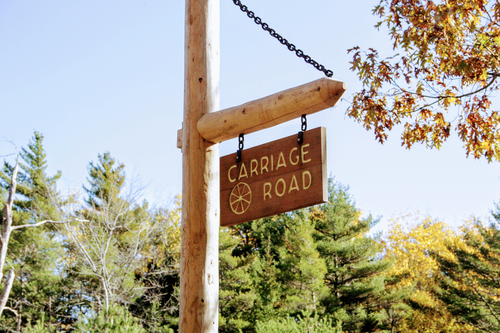

盛夏未尽的时候之时便有打算去一个新的国家公园露营， 往南八小时是Shannondoah已经去过了云中公路，这次决定向北走， 东北一隅便是Acandia。
不过雁儿那时候溜回国内消暑，丹丹九月搬来和我一起住， 开学之后忙忙碌碌又拖拉了一个多月， 直到上周和实验室小哥哥聊起这个受到他疯狂安利， 心血来潮一查居然发现是官方露营提供的最后一周，一顿催促相约最终三人成行。
行程相当紧凑，周五下午才能出发，周一中午之前必须回到长岛去开组会， 而单程就要至少八小时，扎扎实实在车上是坐了二十多个小时。 最终行程如下：周五下午五个小时开到波士顿， 接到坐火车到波士顿的雁儿之后住在波士顿向北一些的民宿。 周六中午出发沿海去Acadia，晚上住在blackwood官方露营地。 周日清晨看海边日出逛到下午， 一路开到Albany后洗个澡精神大振直接一口气开回长岛圆满结束。
食物篇
首先实名嫉妒城里人。
和雁儿约好了在Boston Collage相见，我们早到了我就顺脚去了冰淇淋店， 自家特制奶油的确很好吃， 雁儿饿了于是去了来之前就看上的一家评价超高的墨西哥餐厅， 装修风格很有意思，墨西哥卷也相当好吃，村里人表示羡慕得不行。
此处只有冰淇淋因为第二天早上吃的卷，太好吃忘记拍了（笑死）
去缅因自然少不了龙虾卷，我点了一半龙虾一般蟹肉。别看这个廉价的塑料盒， 连座位都没有的小店面，讲道理吃过的最好吃的龙虾卷。 面包是热的龙虾和蟹肉是冰的，得到了大家的一致好评。
到了Sea Harbor我们连吃两家店还点了冰淇淋，不过感觉不如之前。
风景篇
自古逢秋悲寂寥，我言秋日胜春朝。
Blackwood不愧是评价最高的官方露营地， 走到海边看日出仅仅不到5分钟的步行距离。 经历了前一天直逼零度的寒夜， 我们瑟瑟发抖德挣扎中从睡袋中爬起一起去看了日出。
回来路上的林间微光，是破开寒夜的第一丝温柔。

文章开头的彩虹森林，开车时路过又开回去的绵延秋意， 还带着阳光点缀的明暗变化，比春花明艳，比夏叶斑斓， 是冬雪覆盖前最灿烂的时光。
卡迪拉克山顶俯瞰大海又是别有一番滋味的苍茫。
临近中午阳光渐暖，我们还去湖边转了转。湖面并非平静无波， 秋日的肃杀之气又被这秋意掩盖了不少。不过冬天是真的近了， 不走在阳光下一旦站在树荫里，一会儿就得缩起双肩不停搓手， 有暖气的车里仿佛天堂。
虽然一个人开这么久车很辛苦，但是三个人欢声笑语一起挨冻， 都是和我睡过一张床的友谊，可以说是感觉就是那时候的人生赢家了。 三人图快乐结尾，秋天走了，冬天快乐！